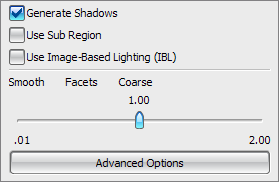

点击下面的链接以获取更多信息。
生成阴影—创建光线追踪阴影而不是使用阴影贴图(高级光源功能)
光线追踪的阴影更尖锐，也更详细，但生成速度更慢，并且不能有软边缘。光线追踪阴影消耗的内存也不如阴影贴图多
使用子区域—用于选择模型的一个特定区域来着色，而不是对整个视图着色。使用光标在视图中画一个矩形来指定要着色的区域
使用基于图像打光(IBL) —在模拟所选图像的打光条件时渲染场景
小平面—控制在几何体上生成多边形的数目，并且影响所生成图像外观的光顺性
高级选项—–设置比如透明度、光线跟踪以及固定摄像机视角等选项